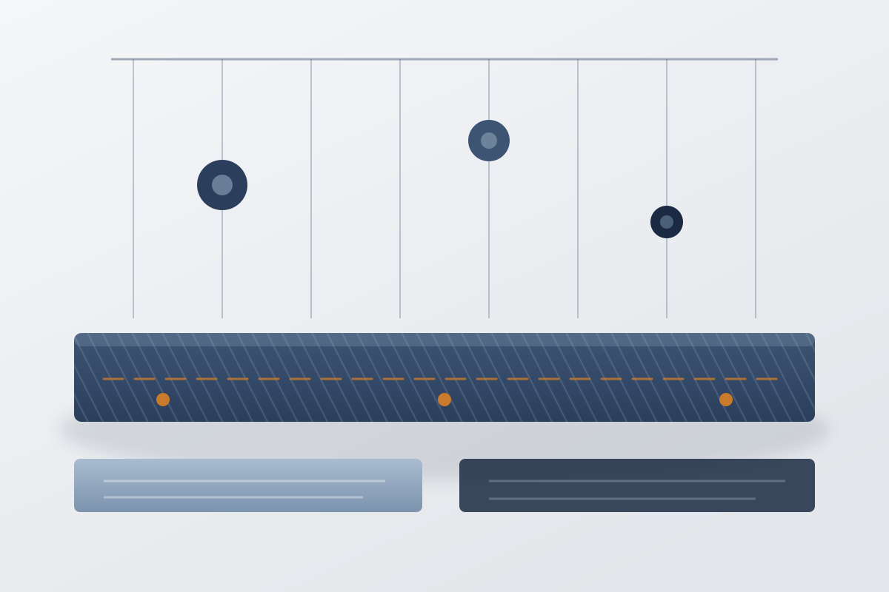
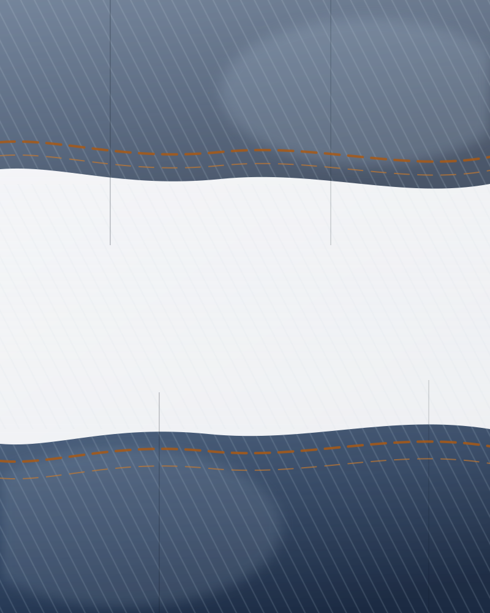
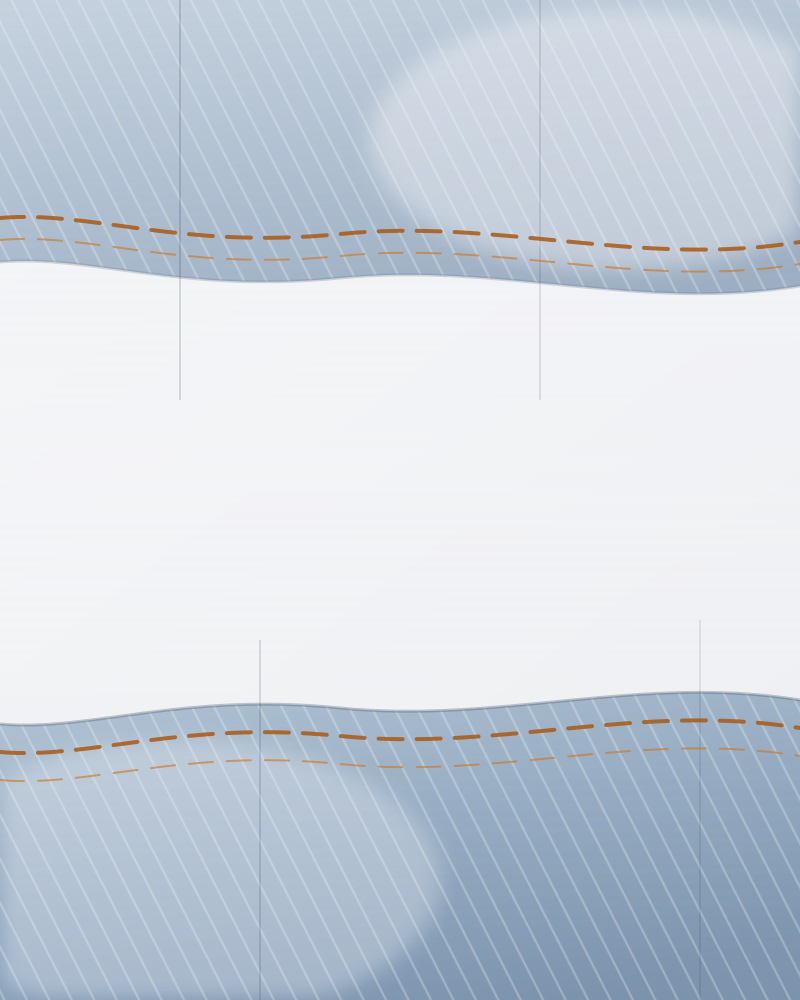

品牌故事 · 2019 年至今
只做牛仔，把一种面料做透
上衣、裤子、裙子、包包，四个品类，全部围绕一种面料：丹宁。日本冈山的赤耳丹宁、新疆长绒棉的靛蓝纱线、意大利的环保水洗，每一批的织造厂、盎司克重、水洗厂与检测报告编号都写进溯源链。一件衣服的价值不在第一眼，而在第五十次穿它的时候。
由来
值这个价，要能被查证
下面是 dooyoor 㛊䎟 自己的说法，没有修饰，也没有形容词。
时间线
六年，四件事
我们没有太多里程碑，能写下来的只有这四件。
认证二手
回收、验真、养护、二次上链
牛仔的寿命长过大多数人的穿着周期。一条原色牛仔裤穿一年就压在柜底，是浪费。把不再穿的寄回，我们让它在链上继续走下去。
-
第 1 天
收件与验真
寄到上海仓，核验吊牌内侧的溯源码与链上记录是否一致，非正品原路退回。
-
第 3 天
成色评级
按 A / B+ / B 三级判定，有明显使用痕迹的会拍照并在链上注明瑕疵位置。
-
第 5 至 10 天
清洁与养护
丹宁单独水洗，不与其他面料混洗：反面冷水轻柔档，中性洗涤剂，按深浅色分开，避免串色。
-
第 12 天
二次上链
追加一条流转记录，写明回收时间与成色等级，历史记录仍然只增不改。
-
重新上架
明码标价
回收价与售价都写在商品页上，两者之间的差额只用于验真、养护与仓配。
上一位穿着者穿了约 40 次，这些记录都会留在链上——下一位买家在商品页就能看到。
三原则
我们怎么判断一件衣服
款式可以少，这三条不能让。
面料
冈山赤耳、新疆靛蓝纱线、意大利水洗
只用这三种丹宁做主力，每一种都能说清产地、盎司克重与为什么值这个价。不混低价的替代面料来压成本，也不靠名字抬价。
Okayama Selvedge
日本冈山赤耳丹宁
来自日本冈山的织造厂，用老式梭织机低速织造：机器一天织不出多少米，但布面紧实、有骨架，不会穿两次就松垮。布边自带赤耳，裁剪时按赤耳排料，裤腿的经纱方向正，洗后不扭腿。经纱用绳染工艺反复浸染 8 次，靛蓝上得深而慢，所以褪色是分层的，膝盖与口袋边缘先亮起来，整条裤子不发灰。上衣用 14oz，裤子用 13.5oz。贵在慢：同样的米数，老式梭织机要花掉几倍的时间，废布率也更高。
Xinjiang Long-Staple Indigo
新疆长绒棉靛蓝纱线
棉只用新疆长绒棉：纤维长、毛羽少，纺出的经纱表面干净，才扛得住绳染的 8 次浸染与反复拉伸——纤维短的棉在染缸里容易起毛、断头，织出来的布也不匀，这就是它贵的地方。长绒棉的另一个好处是染色均匀：靛蓝吃得透，色牢度稳，洗过很多次蓝还是那个蓝，不会先掉成灰白。手感上，长绒棉的丹宁刚上身偏硬，两三次穿着后就贴腿，磨出的褶皱也更细。我们不混便宜的棉来摊薄成本，因为混过之后经纱的表现立刻不同。
Italian Eco Wash
意大利环保水洗
水洗在意大利合作的水洗厂完成，这是我们最不肯省的一段工序。漂白用环保氧漂，不用氯漂：氯漂便宜、快，但残留处理负担大，颜色也容易发死；氧漂慢一些，褪色层次更自然。石洗用浮石配酵素，靠酶分解纱线表面的靛蓝，而不是靠硬磨——同一块布，磨出来的和分解出来的手感不一样。一条裤子的水洗走 27 道工序，其中 9 道是手工：局部刷色、猫须、手工打磨都由师傅看布决定，不走流水线设定。所以同款两条裤子的褪色位置不会完全一样。
Lookbook
穿在身上的样子
同一件丹宁衬衫和同一条牛仔裤，穿过一个夏天和一个冬天之后的样子。


定价
价格是算出来的
一件衣服的钱由三部分构成，比例不会有太大浮动。
我们把成本花在哪里：一件衣服的钱，45% 去面料，25% 去版型与打样，30% 是缝制的工费。剩下的用于溯源系统的运行、仓储与快递。
没有经销商加价，也很少投广告。上衣 ¥460–1280，裤子 ¥580–1080，裙子 ¥780–920，包包 ¥220–460；认证二手按成色重新定价，回收价与售价都写在商品页上。